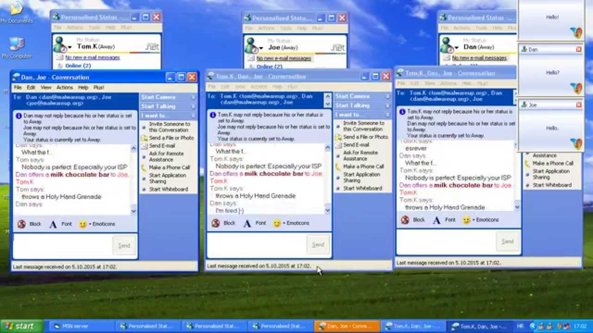

Buying my first domain
I bought my first domain "annaleijon.se" because I wanted a good and serious-sounding e-mail address. Up until 2013, when I bought my first domain, I had had a couple of different e-mail addresses. For example, I've had two hotmail e-mail adresses and both are absolutely embarrassing.
At probably 11 years old I got my very first e-mail address ever. I believe my older brother helped me set it up and the address became: golvmoppen_91@hotmail.com. "Golvmopp" in Swedish means "floor mop" in English. Basically a mop you wash your floors with. I really have no idea what I was thinking with that one, but it was somewhat of a trend at the time to have random aliases. I looked around the room and saw the first thing and thought "great", floor mop it is. The second part, 91, is just the year I was born.
My next, much cooler, e-mail adress was: a_leijonet@hotmail.com. The "a" obviously stands for my first name, Anna, and "leijonet" is basically my last name "leijon", wich means lion in English. "Leijonet" means "the lion". I played soccer at the time and it was my nickname on the field (since everybody else was also called Anna). I still use this e-mail address to sign up for spam stuff today.
 The nostalgia I get from this picture is insane. MSN Messenger really was the shit back in the days.The main purpose of these e-mail accounts was of course to be able to use MSN Messenger, which was super popular at the time. However, obviously neither of these hotmail adresses were good enough to apply for serious jobs with, or at least that was what I was told during my lectures in industrial engineering and management. Hence, I bought the domain "annaleijon.se". I wanted to buy the ".com" domain, but much to my dismay, apparently I share my name with a professional photographer who had already bought it.
More recently, I have also noticed that a professional tennis player has my name. I had thought that my name was kind of unique, but I guess not unique enough. This is really a problem these days - having to generate different aliases for absolutely everything. Anyhow, having bought a domain was my first step towards having my own website.